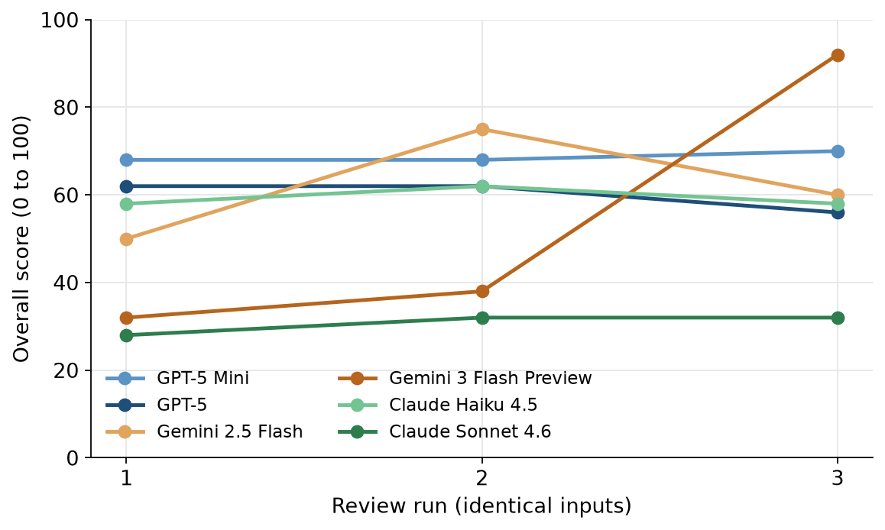
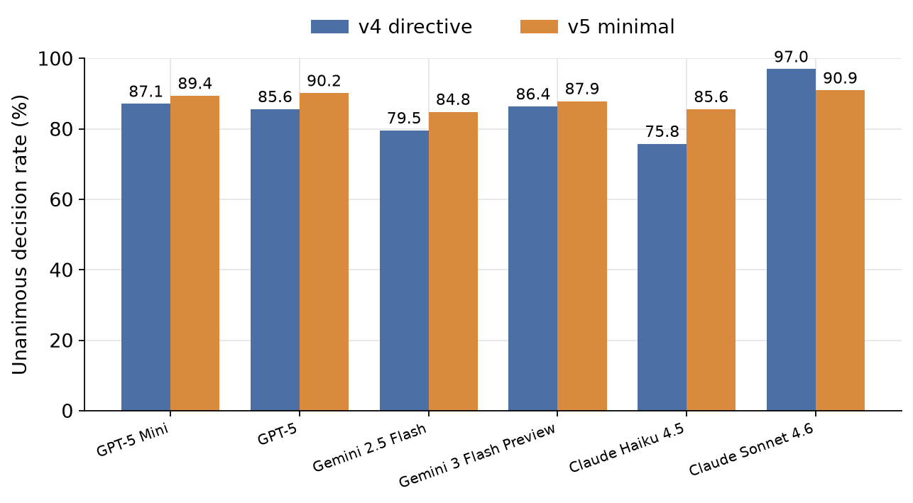
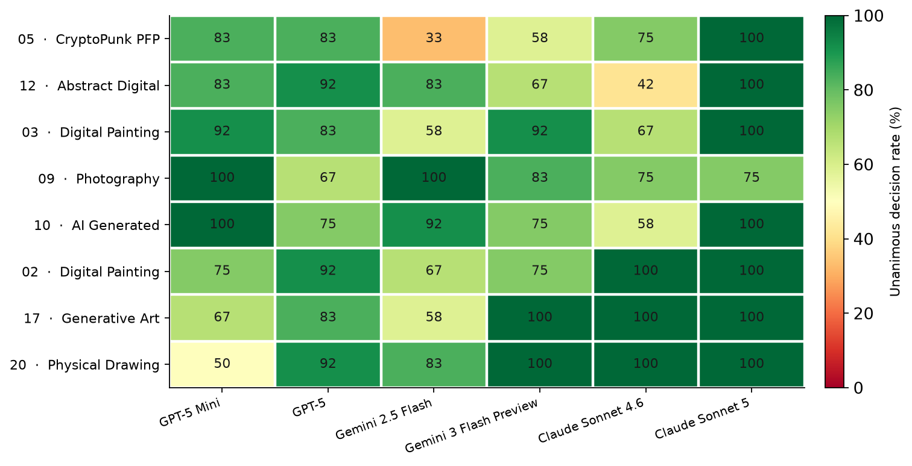
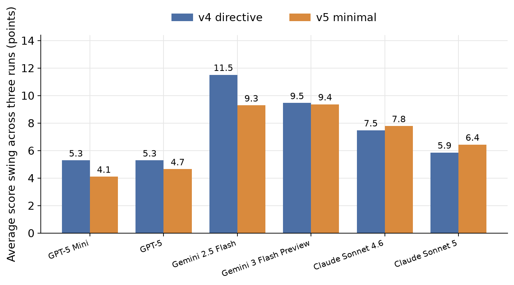
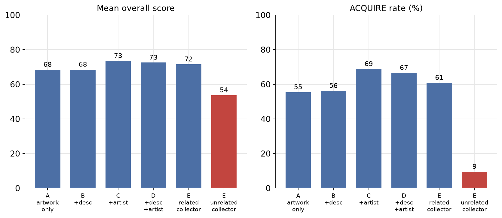
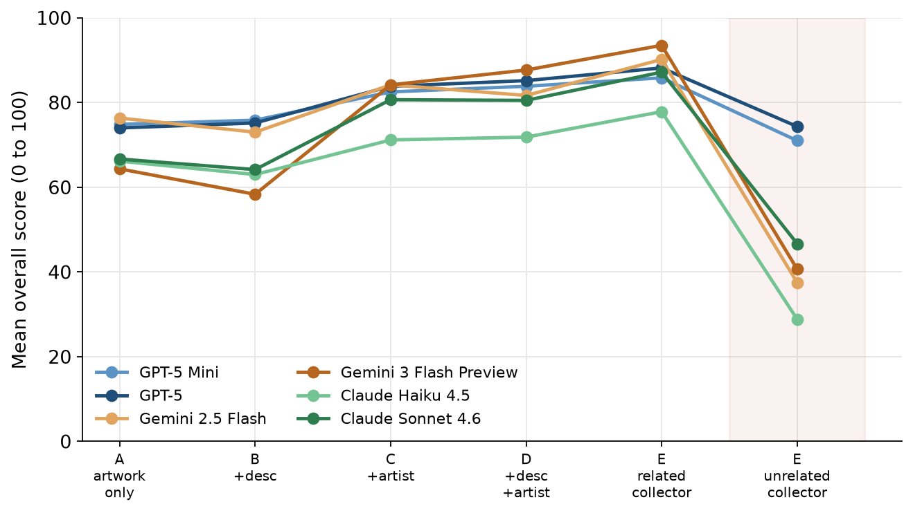
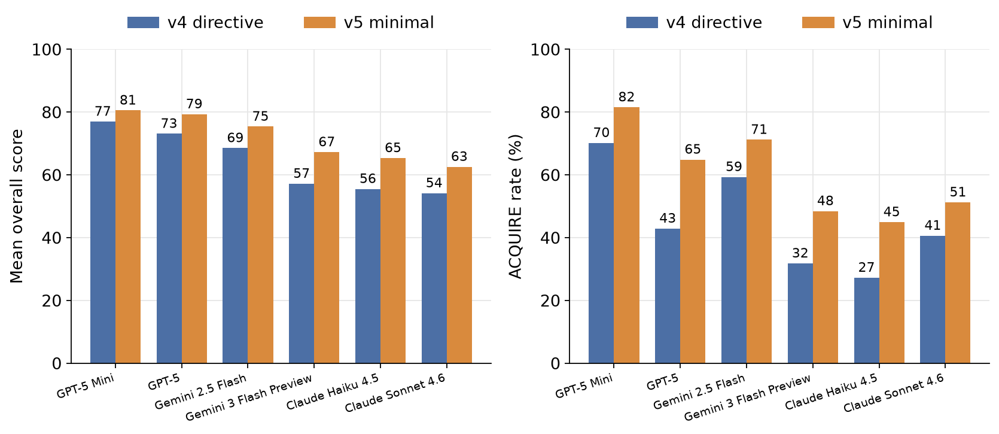
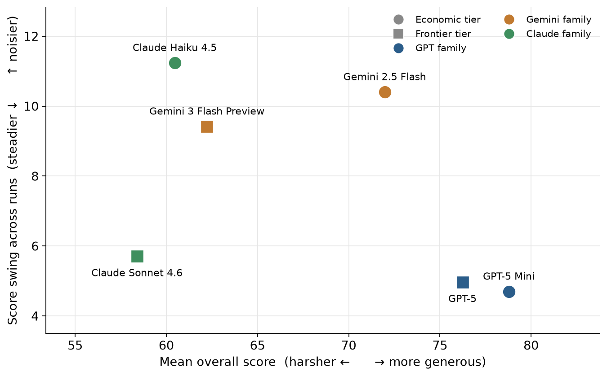
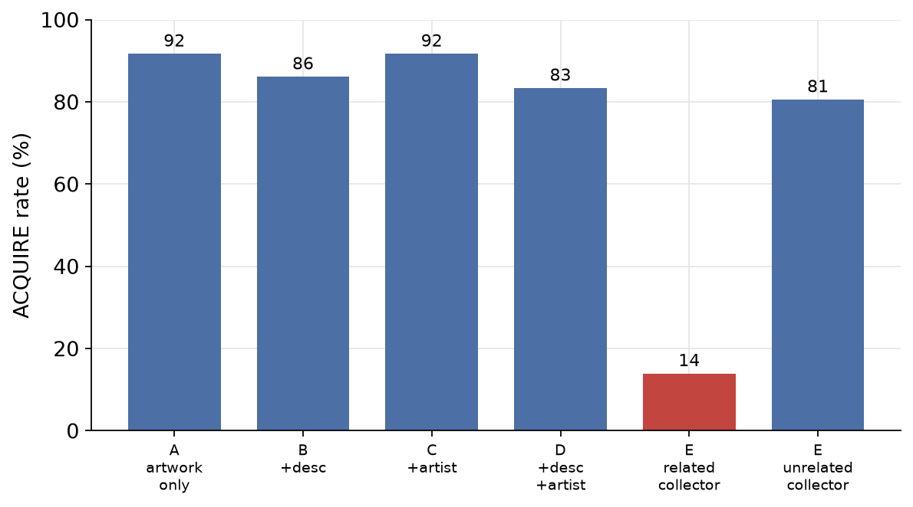
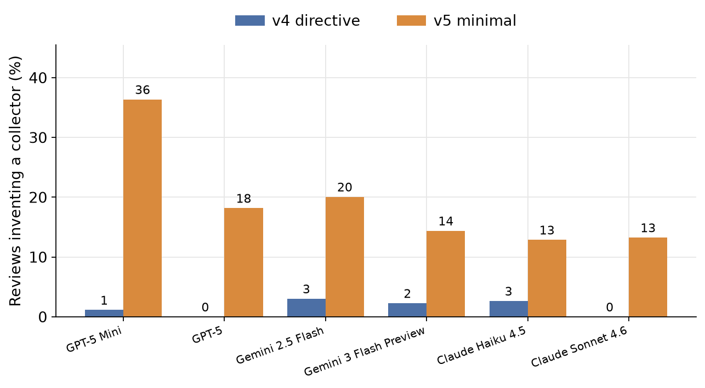

PUBLIC DOCUMENT 001
Baseline Behavior of Autonomous AI Art Reviewers
An Empirical Study of Consistency, Context, and Preference in Contemporary Multimodal Models
Transient Research Division
Transient Labs
Abstract
AI systems are increasingly the ones viewing, sorting, recommending, and even deciding whether to buy images, which means an artwork is more and more likely to be judged, and acquired or passed over, by a machine before it reaches any person. This study is an early attempt to measure that shift rather than guess at it. We put six of today’s leading AI models in the role of autonomous art reviewers and watched how they behaved. The six span three families, OpenAI, Google, and Anthropic, each represented by an economical and a flagship model, and each was run under two different reviewer prompts. Every model reviewed twenty-two anonymized artworks under five conditions of increasing context, three times each, for 4,752 structured reviews, every one carrying a score and a verdict of ACQUIRE or PASS. The reviewers proved fluent, opinionated, and never quite consistent. Ask one the same question twice and its answer drifts. Tell it who made the work, or who it is buying for, and the verdict can flip, sometimes on a single word. Reword its instructions and it grades harder or softer on command. Line the six up and they read less like better and worse critics than like six distinct personalities. Along the way they showed behaviors the task never called for: from the image alone, with no name given, they recognized famous works and named their makers; they invented imaginary collectors to justify their choices; and they treated a strong score and a decision to buy as two very different bars. The picture that emerges is an audience that is articulate, confident, and entirely steerable, whose standards are set as much by how it is instructed as by the work in front of it.
Contents
2. Research Questions and Study Objectives
4.3 Reviewer Instruction Design
Figures
Fig 1. Overall score across three runs for a single artwork
Fig 2. Unanimous decision rate by model and prompt
Fig 3. Decision consistency for the eight least consistent artworks
Fig 4. Average score swing across runs, by model and prompt
Fig 5. Score and acquisition across the six contexts
Fig 6. One artwork's score across the six contexts, by model
Fig 7. Score and acquisition by model under the two prompts
Fig 8. A map of reviewer temperament
Fig 9. Acquisition for Artwork 012 across the six contexts
Fig 10. Reviews inventing a collector, by model and prompt
Tables
Tab 1. The five contextual conditions
Tab 2. Unanimous decision rate by prompt, tier, and model
Tab 3. Change in unanimous decision rate between prompt versions
Tab 4. Unanimous decision rate by artwork and model (eight least consistent)
Tab 5. Effect of adding each piece of context
Tab 6. Description effect for visually ambiguous works
Tab 7. Artist-name effect, canonical works versus the rest
1. Introduction
Throughout history, art has been made with one expectation: that eventually a person would stop and look. A gallery wall, a printed page, a feed on a screen, the setting keeps changing, but the audience has stayed human. Technology has reshaped how art is made, sold, and collected at every turn, yet the act of judging it has stayed a human one.
That is starting to change.
AI models can now look at an image and tell you what they see, what they think of it, and whether it deserves your attention. As these systems get built into creative platforms, marketplaces, and everyday software, they are starting to shape how art is discovered, evaluated, and collected. A growing share of it now meets a machine first, seen, scored, sorted, or quietly passed over before any human lays eyes on it.
This study is part of I Used to Make Art for Humans, an ongoing artistic research project by the Transient Research Division (TRD) that sits with that shift instead of looking away from it. Whether AI can make art is the question everyone reaches for. This project asks a different one, the one it lives in: what happens to art when its first audience is no longer human?
This study is the groundwork for that larger project. Before it can take up its question through art, we need to understand how these new gatekeepers actually behave. How consistent are they? What tips their judgment? Does a name change the verdict? Does a price? Do two different models look at the same painting and see the same thing? No one had really sat down and measured it, so we did.
To investigate, six of today’s leading AI models were handed a job people have always kept for themselves: review a set of artworks and decide whether to acquire them. Each produced a full review, a first impression, an interpretation, scores across five aesthetic dimensions, an overall score, a written rationale, and a final verdict of ACQUIRE or PASS. Then we varied one thing at a time, what the model knew about the work, how it was told to judge, and which model was doing the looking, and ran every configuration three times over to see what held.
The objective is not to crown the model that reviews art correctly; there is no correct. Art criticism has no answer key, and aesthetic judgment cannot be reduced to a single accuracy score. Judging a work and deciding to acquire it are not the same act either, a reviewer can admire a piece and still decline to buy it, so we track the score and the verdict as separate signals throughout. What we were after is behavior, where these systems hold steady, where they wobble, what moves them, and what that says about the kind of audience art is about to face. Read it as a baseline, taken early, of a machine learning to look.
2. Research Questions and Study Objectives
The purpose of this study was to establish a behavioral baseline for these AI models acting as autonomous art reviewers. The goal was never to grade the models themselves, but to characterize how they behave under controlled conditions and pin down which factors most strongly move their evaluations.
In this paper, reviewer behavior refers collectively to numerical evaluations, acquisition decisions, written rationales, sensitivity to contextual information, and consistency across repeated reviews.
The study was designed around the following research questions:
RQ1. Reviewer Consistency. How consistently do the models evaluate the same artwork when presented with identical information across repeated reviews?
RQ2. Context Dependence. How does the addition of contextual information, including artwork descriptions, artist identity, and collector preferences, influence aesthetic evaluations and acquisition decisions?
RQ3. Reviewer Instruction Design. How does the level of guidance provided through reviewer system instructions influence scoring behavior, written critiques, and acquisition outcomes?
RQ4. Model Behavior. Do different AI models exhibit distinct reviewing behaviors when operating under the same experimental conditions?
Beyond these predefined questions, we also watched for behaviors we had not anticipated when designing the study. These emergent observations are exploratory by nature, but they turned out to be some of the most revealing glimpses of how these systems actually read visual art and respond to what they are told about it.
3. Experiment Design
The study varied two things: which model did the reviewing, and how it was instructed. Every configuration reviewed the same artworks under the same conditions, so behavior could be compared cleanly across models, prompts, and context while the artwork itself stayed fixed.
Six models were tested, spanning three families, OpenAI, Google, and Anthropic, with each family represented at two tiers: an economical model and a higher-capability flagship model. The economical tier was GPT-5 Mini, Gemini 2.5 Flash, and Claude Sonnet 4.6; the flagship tier was GPT-5, Gemini 3 Flash Preview, and Claude Sonnet 5. Each model was run under two reviewer instruction frameworks. The first was a more directive prompt that spelled out a scoring philosophy and how the reviewer should behave; the second was a much more minimal prompt that defined only the structure of the review and left the standards to the model.
The dataset was twenty-two artworks chosen to span a wide range of genres, media, and levels of technical and conceptual ambition. To stretch the reviewers, it deliberately mixed historically significant works, contemporary digital art, generative art, profile picture collections (PFPs), photography, abstract works, AI-assisted imagery, and even a child’s artwork. Apart from three canonical historical works kept as reference points, every contemporary piece is anonymized throughout this paper, so the focus stays on how the reviewers behave rather than on the artists themselves.
Each artwork was evaluated under five progressively richer contextual conditions:
| Condition | Information provided |
|---|---|
| A | Artwork only |
| B | Artwork + description |
| C | Artwork + artist name |
| D | Artwork + description + artist name |
| E* | Artwork + description + artist name + collector preference |
* For Condition E, each artwork was reviewed twice using two distinct collector preference profiles. One profile was intentionally aligned with the artwork’s genre and artistic characteristics, while the second represented a collector whose stated preferences were intentionally unrelated. These profiles served as a simplified approximation of how future autonomous reviewing systems might evaluate artwork on behalf of collectors with differing tastes.
Every condition was run three separate times on identical inputs, which let us measure consistency on its own, apart from any change introduced by context or instructions. All told, across every model, condition, and repeat, the study generated 4,752 individual reviews. Each one carried a first impression, an interpretation, five scored dimensions (Craft, Composition, Originality, Emotional Resonance, and Conceptual Depth), an overall score, a written rationale, and a final verdict of ACQUIRE or PASS.
That dataset is what makes the rest of this paper possible: it lets us examine consistency, sensitivity to context, the pull of collector preferences, the effect of the instructions, and the differences between model families, all within a single controlled frame.
4. Results
All of this produced 4,752 reviews across six models, two prompts, five contextual conditions, and three repeats each. The findings below are organized around the research questions from Section 2. Rather than march through each configuration one at a time, we present the results by the behavior being examined, so patterns can be compared across models, instructions, and context side by side.
4.1 Reviewer Consistency
If a reviewer reaches a different conclusion every time it looks at the same work, none of its conclusions count for much. So before asking how context or instructions change a review, we asked a simpler question: show a model the exact same artwork and the exact same information three times, and how much does its answer move? We looked at this two ways. One is the decision, whether the model lands on the same ACQUIRE or PASS each time. The other is the score, how much the 0 to 100 rating drifts across those same three runs.
Figure 1 shows what that looks like for a single work. Each model reviewed the same artwork three times in a row, with nothing changed between runs.

Every number in this section comes from repeated review groups. A group is one artwork, one model, one prompt version, and one condition, run three times with identical inputs. The study contains 1,584 of them, and every one is complete.
Decision consistency
We call a group unanimous when all three runs made the same call, three ACQUIRE or three PASS. The unanimous rate for a model and prompt is simply the share of its groups that were unanimous, which tells us how reliably it sticks to the same accept-or-reject verdict when nothing about the task has changed.
| Reviewer prompt | Model tier | Model | Unanimous groups | Complete groups | Unanimous rate |
|---|---|---|---|---|---|
| v4: Directive | Economical | GPT-5 Mini | 115 | 132 | 87.1% |
| v4: Directive | Economical | Gemini 2.5 Flash | 105 | 132 | 79.5% |
| v4: Directive | Economical | Claude Sonnet 4.6 | 117 | 132 | 88.6% |
| v4: Directive | Flagship | GPT-5 | 113 | 132 | 85.6% |
| v4: Directive | Flagship | Gemini 3 Flash Preview | 114 | 132 | 86.4% |
| v4: Directive | Flagship | Claude Sonnet 5 | 130 | 132 | 98.5% |
| v5: Minimal | Economical | GPT-5 Mini | 118 | 132 | 89.4% |
| v5: Minimal | Economical | Gemini 2.5 Flash | 112 | 132 | 84.8% |
| v5: Minimal | Economical | Claude Sonnet 4.6 | 115 | 132 | 87.1% |
| v5: Minimal | Flagship | GPT-5 | 119 | 132 | 90.2% |
| v5: Minimal | Flagship | Gemini 3 Flash Preview | 116 | 132 | 87.9% |
| v5: Minimal | Flagship | Claude Sonnet 5 | 127 | 132 | 96.2% |

Consistency was fairly high across the board. Every configuration agreed with itself in at least three quarters of its repeated groups, and usually far more. None reached perfect agreement, though. Even the steadiest, Claude Sonnet 5 under the directive prompt, still contradicted itself in about one group in sixty, and most models sat closer to one in ten. Some run-to-run wobble showed up in every model we tested, even with the inputs held completely fixed.
One pattern held for four of the six models: each was more consistent under the minimal v5 prompt than under the directive v4 prompt. The two Claude models were the exceptions, and striking ones. Claude Sonnet 5 was the single most consistent configuration in the study under the directive prompt, at 98.5 percent, and both Claude models were steadier under the directive prompt than the minimal one. Table 3 lays out the change for every model.
| Model | v4 directive | v5 minimal | Change |
|---|---|---|---|
| GPT-5 Mini | 87.1% | 89.4% | +2.3 |
| GPT-5 | 85.6% | 90.2% | +4.6 |
| Gemini 2.5 Flash | 79.5% | 84.8% | +5.3 |
| Gemini 3 Flash Preview | 86.4% | 87.9% | +1.5 |
| Claude Sonnet 4.6 | 88.6% | 87.1% | −1.5 |
| Claude Sonnet 5 | 98.5% | 96.2% | −2.3 |
Among the four models that improved, the gain ranged from 1.5 points for Gemini 3 Flash Preview to 5.3 for Gemini 2.5 Flash, the shakiest reviewer under the directive prompt and the one the minimal prompt helped most. Both Claude models ran the other way, each a point or two lower under the minimal prompt, with Claude Sonnet 5 sliding from a near-perfect 98.5 down to 96.2. One reading is that the extra scoring guidance in the directive prompt gives most models more ways to land on a borderline call that then tips one way or the other between runs, while the minimal prompt lets them fall back on a steadier internal sense of the work. The Claude models, already the firmest deciders in the study, seem to have used that same guidance to lock in rather than waver. These readings fit the numbers but are not proven by them, and we return to the effect of instruction detail more directly in Section 4.3.
Consistency varies by artwork
Those overall rates tell us how often a model agreed with itself on average, but the average hides a lot. Break the same numbers out by individual artwork, and the instability turns out to be very unevenly spread. Table 4 and Figure 3 show the eight artworks the models were least consistent on, pooling both prompts and all conditions.
| Artwork | Genre | GPT-5 Mini | GPT-5 | Gemini 2.5 Flash | Gemini 3 Flash Preview | Claude Sonnet 4.6 | Claude Sonnet 5 |
|---|---|---|---|---|---|---|---|
| 005 | CryptoPunk PFP | 83.3% | 83.3% | 33.3% | 58.3% | 75.0% | 100.0% |
| 012 | Abstract Digital | 83.3% | 91.7% | 83.3% | 66.7% | 41.7% | 100.0% |
| 003 | Digital Painting | 91.7% | 83.3% | 58.3% | 91.7% | 66.7% | 100.0% |
| 009 | Photography | 100.0% | 66.7% | 100.0% | 83.3% | 75.0% | 75.0% |
| 010 | AI Generated | 100.0% | 75.0% | 91.7% | 75.0% | 58.3% | 100.0% |
| 002 | Digital Painting | 75.0% | 91.7% | 66.7% | 75.0% | 100.0% | 100.0% |
| 017 | Generative Art | 66.7% | 83.3% | 58.3% | 100.0% | 100.0% | 100.0% |
| 020 | Physical Drawing | 50.0% | 91.7% | 83.3% | 100.0% | 100.0% | 100.0% |

The clearest thing here is that instability does not belong to an artwork or to a model on its own. It belongs to the pairing. Gemini 2.5 Flash agreed with itself on Artwork 005 only a third of the time, while Claude Sonnet 5 landed on the same verdict every time. Artwork 012 splits the same way inside a single family: Claude Sonnet 4.6 agreed with itself only 41.7 percent of the time, Claude Sonnet 5 on every single run, on the very same piece. A model that looks steady on average can still come apart on a particular work.
A few broader tendencies still show through. Among these harder works, Claude Sonnet 5 held up best by far, landing on the same verdict every time for six of the eight. Gemini 2.5 Flash sat behind many of the lowest cells, including the single lowest in the whole study, 33.3 percent on Artwork 005, and GPT-5 Mini produced another floor, 50 percent on Artwork 020. Gemini 3 Flash Preview was more all-or-nothing, perfect on several of these eight yet shaky on others, such as Artwork 005 at 58.3 percent. So there is no clean ranking to be had. How steadily a model reviews depends on the model, the artwork, and, as later sections show, the context around it.
Score consistency
Agreeing on the decision is not the same as agreeing on the number. A model can land on ACQUIRE all three times and still put a different score on the work with each pass. So alongside the decision, we looked at how far the overall score drifted across the three runs of each group. The simplest way to see it is the score swing: for each group, the gap between the highest and lowest of the three scores, averaged across all of a model’s groups.

On the number, the models spread out more than they did on the decision. The GPT models held tightest, moving only about five points between their highest and lowest of three tries, the Claude models sat in the middle around six to eight, and the Gemini models swung widest, roughly nine to ten. Gemini 2.5 Flash under the directive prompt was the loosest of all, swinging about 11.5 points on average, more than double GPT-5’s 5.3 under the same prompt. A model can stay locked on the same verdict while its number wanders, and here numerical steadiness tracked family fairly cleanly: the GPT pair pinned the number down, the Claude pair sat close behind, and the two Gemini models let it move.
The minimal prompt steadied the scores too, tightening the four GPT and Gemini models, most of all Gemini 2.5 Flash, whose swing fell from about 11.5 points to 9.3. The two Claude models were the holdouts, each a touch looser under the minimal prompt than the directive one, echoing their decision consistency.
The score kept moving even when the decision did not. Across the 1,401 groups where all three runs agreed on ACQUIRE or PASS, the score still spread by 6.2 points on average, and in about a quarter of them it spread by 10 points or more. Groups that split on the decision spread much wider, 15.1 points on average, more than double. So the number is not just noise. It moves most in exactly the cases where the decision itself was close to tipping.
Summary. The models reviewed the same artworks with high but imperfect consistency, agreeing with themselves in three quarters to nearly all of their repeated groups and never reaching a perfect record. The minimal prompt made the GPT and Gemini models steadier on both the decision and the score, while both Claude models were steadier under the directive one. How steady a model was depended heavily on the specific artwork, and on the pairing of model and artwork rather than either one alone. Numerical steadiness followed family more cleanly here: the GPT models held their scores tightest and the Claude models close behind, while the two Gemini models let them wander, even when the final decision stayed put.
4.2 Context Dependence
The reviewers rarely saw the artwork cold. In most conditions we handed them something extra about it, and the question here is what that extra information did to the verdict. We fed it in layers: a written description of the work, then the artist’s name, then a profile of the collector the reviewer was buying for. Each layer let us watch the same work get scored and accepted or rejected as the reviewer learned more about it.
Figure 5 shows the overall pattern, with every model and both system prompt versions pooled together. Two things stand out immediately. The score barely moves as description and artist name are added, rising only a few points, while the acquisition rate climbs more noticeably once the artist is named. And then, in the final bar, a mismatched collector sends acquisition off a cliff, from about two thirds of works accepted down to under one in ten.

Taken one signal at a time, holding the artwork and model fixed, the three kinds of information behave very differently. Table 5 gives the size of each effect.
| Information added | Score effect | ACQUIRE effect |
|---|---|---|
| Description (over artwork only) | +0.4 | +1.8 |
| Artist name (over artwork only) | +4.8 | +11.4 |
| Aligned collector (over description + artist) | −0.1 | −2.8 |
| Mismatched collector (over description + artist) | −15.8 | −53.0 |
The description barely registers, except when the image is hard to read
On average, telling the reviewer what the work was about did almost nothing. Adding the description lifted the score by a fraction of a point and acquisition by under one, and once the artist was also named the description added nothing at all. For most works, the picture had already said what it was going to say.
That average hides a real exception, though. The description effect varied widely from one work to the next, and it did its clearest work on pieces that do not explain themselves visually. When the artwork-only score was low, meaning the image alone left the reviewer cold or uncertain, a description could move the judgment a lot, and this happened most with the Gemini and Claude models. Table 6 shows a few of these cases.
| Artwork | Model | Artwork only | + description | Score effect |
|---|---|---|---|---|
| 002 (digital painting) | Gemini 3 Flash Preview | 36.0 | 61.5 | +25.5 |
| 005 (PFP) | Gemini 2.5 Flash | 48.3 | 69.2 | +20.8 |
| 008 (photography) | Claude Sonnet 4.6 | 46.2 | 56.3 | +10.2 |
| 017 (generative art) | Claude Sonnet 4.6 | 15.3 | 25.3 | +10.0 |
The description, then, works conditionally, and the condition is whether the image already communicates. When a work carries its meaning on its surface, words about it change nothing. When it does not, they can carry real weight.
The artist’s name helps, but not for the famous works
Naming the artist was the one piece of context in this range that clearly moved both the score and the decision. On average it raised the score by about five points and acquisition by eleven, and it stayed positive even when a description was already present. Knowing whose work it was made the reviewers more favorable toward it.
The lift was not evenly spread, and where it landed is the interesting part. When we separate the three canonical works, made by widely known historical artists, from the rest, the name did essentially nothing for them, while it clearly helped everything else.
| Works | Score, artwork only | Artist-name score effect | Artist-name ACQUIRE effect |
|---|---|---|---|
| Three canonical works | 96.3 | +0.4 | +0.0 |
| All other artworks | 60.1 | +5.5 | +13.2 |
The most likely reason is simple headroom. The canonical works already scored 96 out of 100 from the image alone, so there was almost nowhere left to rise. The name mattered where it carried new information, on the unfamiliar contemporary works, and did nothing where the picture had already earned a top mark on its own.
The collector preference overrides almost everything
The largest effect in the study came from the last piece of context, a profile of the collector the reviewer was acquiring for. Each work was reviewed twice at this stage, once for a collector whose stated taste matched the work and once for a collector whose taste did not. The gap between those two runs dwarfs every other signal we tested. Figure 6 follows a single artwork through all six settings.

A mismatched collector cut the score by about sixteen points and acquisition by more than fifty, taking the acceptance rate from about two thirds of works down to under one in ten. Every model fell, though by different amounts. The Claude and Gemini models dropped hardest on the score, while the GPT models held their numbers higher even as they too stopped acquiring.
The written rationales show what changed. Under a mismatched collector, the reviewers stopped judging the work on its own terms and began judging its fit to the buyer, often passing on pieces they had just rated highly:
“Despite the high technical quality, the work is a digital painting and lacks the algorithmic and generative system central to the collector’s preferences.” (Artwork 004)
“The work is a total departure from the requested photography medium. It lacks the patient, naturalistic qualities the collector values.” (Artwork 006)
“The piece does not align with the collector’s focus on PFP and character sets.” (Artwork 010)
There is a quieter finding alongside the dramatic one. Even an aligned collector, whose taste matched the work, left the score essentially flat, yet still lowered acquisition by roughly three points on average. Introducing any collector at all seems to make the reviewer more selective, weighing fit on top of quality rather than quality alone. This reading fits the rationales and the numbers, though the present design cannot separate a genuine shift in standards from a simple change in where the acquisition line was drawn.
That average also hides a sharp split between works. A matched collector nudged the reviewers toward caution on most pieces, but on a few it lifted them steeply, and the two clearest cases were both profile-picture works. Artwork 007 was middling on its own. Once the reviewers learned it suited the collector, its score jumped by more than 40 points on average and it went from rarely acquired to almost always. Artwork 005 rose the same way for most of the models. As with the description, the aligned preference did its heaviest work where the reviewer had been unsure of a piece, tipping a borderline case rather than changing a settled one.
Summary. The three kinds of context behaved on three different scales. A description moved the judgment only when the image was hard to read, and otherwise did nothing. The artist’s name gave a modest, broad lift, except on the canonical works that were already scoring at the top. The collector preference overwhelmed both: a mismatched collector was enough to turn a work the reviewer admired into a pass, and even a matched one made the reviewer more cautious. As information about a work accumulated, the reviewers shifted from asking whether it was good to asking whether it was right for this buyer.
4.3 Reviewer Instruction Design
Each model reviewed the artworks under two different sets of instructions. The directive prompt (v4) laid out a scoring philosophy in some detail, telling the reviewer not to inflate scores, that a five out of ten is an average mark and top scores should be rare, and that acquisition is an endorsement to be withheld from work that does not earn it. The minimal prompt (v5) gave only the structure of the review and left the standards to the model. Because the models, artworks, and conditions were identical across the two, any difference in behavior traces back to the instructions themselves. Consistency was one such difference, covered in Section 4.1, where the minimal prompt proved the steadier of the two for most models. Here we look at what the instructions did to the scores and the decisions.
The directive prompt made the reviewers markedly harsher and more selective. Pooled across all models, it lowered the mean overall score from 69.1 to 61.8 and cut the acquisition rate from 55.7 to 41.7 percent. As Figure 7 shows, the effect held for every model without exception, and it ran through all five evaluation dimensions rather than any single one, with each dimension scoring lower under the directive prompt. The instruction to grade strictly and acquire sparingly did what it asked. Simply describing a tougher standard was enough to shift both the numbers and the decisions across the board.

This selectivity came at a cost, and it connects the two prompt findings. For most models the directive prompt was also the less consistent one, as Section 4.1 reported. Pushing the reviewers to grade strictly moved many works toward the accept-or-reject boundary, and decisions made near that boundary were the ones most likely to change from one run to the next. The minimal prompt was more generous and more stable at once, while the directive prompt bought a tougher standard at the price of steadiness.
Summary. Instruction design worked as a calibration dial. A prompt that described strict grading and selective acquisition produced exactly that, lowering scores and acquisitions uniformly across models and dimensions, while a prompt that left standards unstated ran more generous and, for most models, more consistent. The same artwork could earn a different score and verdict depending only on how the reviewer had been told to judge it.
4.4 Model Behavior
This section is not a benchmark. How capable these models are in general, across reasoning, vision, and the rest, is measured carefully and continuously by others, and readers who want that comparison should turn to independent evaluations such as those maintained by Artificial Analysis.1
The question here is narrower and specific to the task: given the same artworks and instructions, how did each model behave as an art reviewer? We look at how generously it scored, how steadily, how widely it used the scale, how often it acquired, and how it wrote. The six models divide two ways. By family, into the two OpenAI models, the two Google models, and the two Anthropic models; and by tier, into the three economical models (GPT-5 Mini, Gemini 2.5 Flash, Claude Sonnet 4.6) and the three flagship models (GPT-5, Gemini 3 Flash Preview, Claude Sonnet 5).
| Model | Tier | Family | Mean score | ACQUIRE | Decision agreement | Score swing | Scale spread |
|---|---|---|---|---|---|---|---|
| GPT-5 Mini | Economical | GPT | 78.8 | 75.9% | 88.3% | 4.7 | 9.0 |
| GPT-5 | Flagship | GPT | 76.2 | 53.9% | 87.9% | 5.0 | 11.8 |
| Gemini 2.5 Flash | Economical | Gemini | 72.0 | 65.3% | 82.2% | 10.4 | 14.8 |
| Gemini 3 Flash Preview | Flagship | Gemini | 62.2 | 40.2% | 87.1% | 9.4 | 22.1 |
| Claude Sonnet 4.6 | Economical | Claude | 55.7 | 38.6% | 87.9% | 7.6 | 24.4 |
| Claude Sonnet 5 | Flagship | Claude | 47.7 | 18.3% | 97.3% | 6.2 | 21.3 |
The tier told a smaller but clean story. The higher-capability models were not more generous. They were more critical. Pooled together, the economical models averaged 68.8 and acquired 59.9 percent of works, while the flagship models averaged 62.1 and acquired 37.5 percent. This held in every family and on both measures at once: the flagship model graded harder than its economical sibling and acquired less, with no exception. Added capability, at least here, bought a harsher and more selective reviewer rather than a more generous one.
The family divide was larger still. Scale use separates the families cleanly: the GPT models kept their scores in a narrow, generous band, the Gemini models ranged wider and graded harder, and the Claude models graded hardest of all, sitting at the bottom of the scale, with Claude Sonnet 5 the most reserved reviewer in the study at a mean of 48 and an acquisition rate of just 18 percent. Steadiness tracks family here too. The GPT models moved their scores only about five points from run to run, the Claude models sat close behind at six to eight, and the Gemini models swung widest, near ten. Figure 8 places the six models on a simple map of these tendencies: three families in three distinct regions, grading harder from GPT through Gemini to Claude, with the Gemini pair alone up in the noisy band and everyone else holding steadier.

The writing had its own signatures. The GPT models qualified their judgments the most, hedging often and almost never reaching for absolute language. The Gemini models wrote the tersest reviews and leaned more categorical. Claude Sonnet 4.6 wrote by far the longest reviews, close to twice the length of any other model’s, and both Claude models reached for absolute terms such as “fundamentally” or “entirely” the most of any family, up to eleven times as often as the GPT models, while still hedging heavily; they argued at length and in strong terms at once. The contrast shows up in single reviews. Passing on the same photograph, GPT-5 wrote that it admired the work’s “poise and craft, yet it reads as a refined reprise rather than a necessary reimagining,” and set it aside. Gemini 3 Flash Preview, reaching the same decision, was blunter and briefer, finding that the work “ultimately fails to transcend its status as a high-end postcard.” That same taste for decisive, literal language turns up again in Section 4.5.
Summary. The six models behaved less like better and worse versions of one reviewer and more like reviewers with different temperaments. The flagship models were the tougher graders and the more selective buyers, in every family. The GPT models were generous, steady, and hedged in their language; the Gemini models graded harder, ranged wider, and wrote tersely and categorically; the Claude models graded hardest of all, stayed fairly steady, and wrote the longest, most emphatic reviews, with Claude Sonnet 5 the harshest and most consistent reviewer in the set. There is no single best reviewer in this set, only distinct dispositions, and which one suits a given purpose depends on whether that purpose wants a steady hand or a discriminating eye.
4.5 Emergent Observations
Some of the most telling behavior in the study was never on the test plan. These are the patterns that only showed up once we started reading the reviews line by line.
The reviewers read the collector brief literally
Artwork 012 produced the strangest single result in the study. On its own, and with a description or artist name attached, it was accepted about seven in ten times, between 69 and 72 percent of reviews. Its aligned collector was an abstract-art profile, a pairing we expected to be a comfortable match. Instead that pairing collapsed acquisition to 14 percent, while the deliberately mismatched collector left it near the top at 72 percent. The intended match performed far worse than the intended mismatch.

The cause was in the wording of the profile. The abstract collector asked for non-representational work and listed, among the things to avoid, “artwork that depends on recognizable subjects to work.” Artwork 012 is largely abstract but carries a few small recognizable elements, and the reviewers found them. Across models they passed on the work by quoting that clause back almost verbatim, one noting the piece “directly contravenes the collector’s explicit preference to avoid literal realism and artwork that depends on recognizable subjects to work.” GPT-5, Gemini 3 Flash Preview, and both Claude models rejected it in every run under this collector; only GPT-5 Mini and Gemini 2.5 Flash still acquired it some of the time.
Two things stand out. The reviewers parsed the preference with a lawyer’s literalism, letting one stated constraint override a work they had otherwise accepted nearly unanimously, on the strength of a single detectable detail. And our idea of an aligned collector was not the model’s. We grouped the profile with the work by broad style, while the model measured fit against the exact words of the brief, where one recognizable element was disqualifying. When the audience is a system reading a written set of preferences, the precise phrasing of those preferences can weigh more heavily than the art itself.
The reviewers recognized works they were never told about
In the conditions that withheld the artist’s name, the reviewers were meant to work from the image alone. Sometimes they did not. In a number of these reviews, three dozen in all, a model identified the specific work or its maker unprompted, most often for well-known crypto-native collections, naming the project or artist it believed it was looking at, Claude Sonnet 4.6 most frequently of all. The recognition then colored the verdict. Several reviews acquired a work for its place in art history rather than for the picture in front of them, one calling a piece “a historically significant piece in the digital art and NFT landscape” and recommending acquisition “primarily for its cultural resonance.”
The behavior is a reminder that these models never see a work cold. Even when handed only an image, they measure it against everything they already know about it, and reputation and provenance can carry a decision that was supposed to rest on the work alone.
Without a rule against it, the reviewers invented a buyer
When no collector profile was supplied, the reviewers were meant to judge on their own account. Under the minimal prompt they often reached for an imaginary one instead, justifying a verdict by appeal to a hypothetical collector who would want the work, with phrases like a piece that “would appeal to collectors interested in” some niche, or one that “finds its audience.” This happened in about 18 percent of the no-preference reviews under the minimal prompt, and most of all for GPT-5 Mini, in over a third of its reviews.

The directive prompt carried an explicit instruction not to do this, and the instruction nearly erased the behavior, cutting it to under 2 percent. Left to themselves the models preferred to hand their judgment to an invented audience rather than own it, and a single sentence of guidance was enough to hold them to their own view.
A good score was not enough to be acquired
The overall score and the acquire-or-pass decision did not move together, and the gap between them ran in only one direction. In about 6 percent of all reviews a model scored a work 70 or higher and still passed on it, while in none did a model acquire a work it had scored 45 or lower. Acquisition sat a step above approval. A work could be judged good and still be turned down, yet a work judged weak was never taken. GPT-5, which scored generously but acquired selectively, did this the most, repeatedly admiring pieces it declined to acquire.
| Model | Scored 70 or higher, but passed | Scored 45 or lower, but acquired |
|---|---|---|
| GPT-5 | 122 | 0 |
| GPT-5 Mini | 49 | 0 |
| Gemini 3 Flash Preview | 44 | 0 |
| Gemini 2.5 Flash | 32 | 0 |
| Claude Sonnet 4.6 | 15 | 0 |
| Claude Sonnet 5 | 10 | 0 |
The pattern shows the decision was never a simple cutoff on the score. It carried a selectivity of its own, a second and higher bar a work had to clear beyond scoring well.
5. Discussion
This study set out to watch six of today’s models do a job that until recently only people did: look at a work of art and decide what they think of it. The point was not to grade the models, but to establish a baseline, a first record of how this new kind of audience behaves before the larger project asks what it means. Put together, the results start to show what that audience is actually like.
The clearest takeaway is that these reviewers are articulate and coherent, but their judgment is contingent. They held real preferences, told strong work from weak, and wrote critiques that read as considered rather than canned. But the verdict rested on far more than the artwork. Show a model the same piece three times and its answer often shifted. Change what it knew about the work and the verdict moved with it. Rewrite its instructions and the whole standard slid up or down. Swap in a different model and the temperament changed too. There is no single machine judgment of a given work, only the judgment of a specific model, under specific instructions, meeting a specific frame.
That contingency is where the central question starts to bite. When the first audience for a work is a machine, the people whose taste decides its fate are no longer just the artist and the viewer. They now include whoever wrote the reviewer’s instructions, whoever defined the collector it served, and whoever picked the model. A lot of the judgment gets settled upstream of the work, in a prompt and a profile, by people the artist will never meet. Aesthetic authority becomes something you can configure.
Nothing showed this more clearly than the collector preference. A model that plainly admired a work would pass on it the moment it missed one of the collector’s stated preferences, sometimes on a single disqualifying word in the brief. If art gets screened by systems like these before a person ever sees it, the pressure on the work shifts. What gets through is no longer just what moves a viewer, but what reads as a clean match for a written spec: legible, on brief, correctly tagged. And the models did not judge in a vacuum. Handed nothing but an image, they still recognized collections and rewarded reputation, mixing provenance into what looked like a first impression. A machine audience shows up already knowing the market.
None of this makes the models random. They were competent, fluent, and often sharp, which is exactly what makes the contingency worth flagging. A random judge is easy to dismiss. A judge that sounds thoughtful while quietly taking its standard from whoever set it up is harder to reason about, and a lot more consequential to put between an artwork and its audience.
So, what happens when the first audience for art is no longer human? On the evidence here, the work still gets seen and judged, capably and at a scale no human panel could match, but that judgment is steerable, plural, and set as much by its framing as by the work itself. These are early behaviors of fast-moving systems, so take this as a baseline, not a verdict. Still, it marks the ground the project set out to map: the audience can now be authored, and an artist who wants to be seen by it may end up writing, more and more, for whoever authored the audience rather than for the audience itself.
6. Limitations
This is exploratory work, and a handful of constraints bound what we can honestly conclude from it. They are worth stating plainly, both to frame the findings and to point the way for what comes next.
A small and uneven dataset. The study used twenty-two works, curated by hand and weighted toward digital and crypto-native art, with only a few traditional or physical pieces. The results describe reviewer behavior on this particular set rather than on art in general, and effects tied to genre, such as the recognition of well-known digital collections, may not carry to a broader or differently balanced sample.
Three runs per configuration. Consistency was measured from only three repeated reviews of each configuration. That is enough to show that run-to-run variation exists and to compare its rough size across models, but too few to describe its shape precisely or to surface rarer reversals. The consistency figures should be read as coarse estimates.
Default provider settings. Every review was generated at each provider’s default settings, including default sampling and, where a model supports it, default reasoning behavior. Run-to-run variability depends heavily on the sampling settings, and a lower temperature would likely have produced steadier reviews while a higher one would have produced noisier ones. The consistency results therefore reflect this particular configuration rather than a fixed property of the models.
Single static images. Each artwork was presented as one still image. Animated, physical, and large-scale works were reduced to a single flat picture, which removes motion, scale, material, and the circumstances of viewing. Where a work was animated, the reviewers were told so in an accompanying note passed with every condition, but being informed that a work moves is not the same as seeing it move, and the judgment still rested on a single frame.
No human baseline. We did not collect human reviews of the same works under the same conditions. Without that comparison we cannot say whether the models judge better or worse than people, nor whether their inconsistency and sensitivity to context exceed what a human reviewer would show. People also vary between viewings and are swayed by framing, so none of these behaviors can be called uniquely machine-like on the evidence here.
Scores are self-reported and may not be comparable across models. The 0 to 100 overall score and the 1 to 10 dimension scores are each model’s own, with no shared anchor between them. Differences we described as one model grading harder than another may partly reflect how each model uses the scale rather than a real difference in judgment. The decision-based comparisons, such as acquisition rates, rest on firmer ground than the score-based ones.
A limited and moving set of models. The study covered six models, two each from OpenAI, Google, and Anthropic, at a single point in time. Each family was represented by only two of its models, and no open-weight model was tested. One of the six was a preview build subject to change. These models are a narrow slice of a fast-moving field, and the specific numbers will age quickly even where the patterns may hold.
Only two prompt designs. Instruction design was probed with two prompts at opposite ends, one directive and one minimal. The space of possible instructions is far larger. The prompt findings show that instruction design matters and in which direction, not the full range of how it could be used.
Synthetic collector profiles. The collector preferences were written by the researchers and organized by genre, with the aligned and mismatched profiles chosen to contrast sharply. Real collectors hold subtler and less consistent taste, and Section 4.5 showed that the reviewers keyed on the exact wording of these profiles. The size of the preference effects, especially the collapse under a mismatched collector, likely owes something to that deliberate contrast and specific phrasing rather than reflecting a general rule.
7. Future Directions
This is a first baseline, and the clearest next steps are the ones that would make it firmer and wider. A larger and more balanced set of works, reaching well beyond the digital and crypto-native art that dominated this study, would show how far these patterns hold. Adding open-weight models, and more of each provider’s lineup, and repeating each review more than three times would sharpen both the comparison across models and the measures of consistency. Most valuable of all would be a human comparison, the same works reviewed by people under the same conditions, so that the models’ inconsistency and sensitivity to context could be read against a human baseline rather than on their own.
Because these systems change so quickly, the study is also worth repeating over time. Running the same design against successive generations of models would turn a single snapshot into a record of how machine judgment of art shifts as the models improve, and whether the distinct temperaments seen here persist or converge.
The collector preference was the strongest force in the study and also the most artificial part of its design. A natural progression is to replace the written profiles with preferences inferred from real collecting behavior, learning a collector’s taste from the works they have actually acquired rather than from a paragraph describing it. That shifts the question from how a model reads a brief to how it comes to model a person.
Finally, the reviewer here was a single model making a solitary call. Future work might place several reviewers in conversation, or in deliberate disagreement, and study the judgment that emerges from the group rather than from one voice. And because such systems will increasingly sit between artists and audiences, there is a strong case for opening their tuning and evaluation to public participation, so that the people affected by a machine audience have some hand in shaping how it sees.
Closing
The project this study belongs to takes its name in the past tense, I Used to Make Art for Humans, and that was always meant as a question, not a lament. This paper was an attempt to face the question head-on instead of assuming the answer. What we found is an audience that has already shown up and is already fluent, and it does not see the way a person does. It reads a work as much as it looks at one, it recognizes what it has seen before, and it can be told what to want. Whether an artist writes for that reader, writes against it, or keeps making work for the human eye it may one day reach second, is a choice the next few years will force more often. For now, it is enough to have watched the machine look, and to have written down, as plainly as we could, what that looking has started to mean.
1. Independent, continuously updated capability benchmarks for these and other models are maintained by evaluators such as Artificial Analysis (artificialanalysis.ai/evaluations). This study does not attempt to reproduce or rank general model capability, and the differences reported here describe reviewing behavior on this task rather than overall model quality.